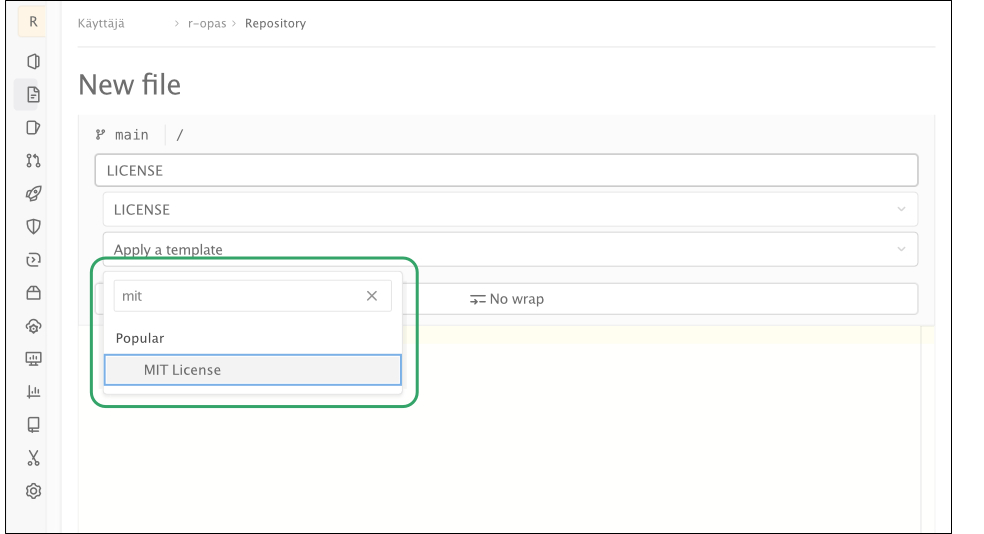
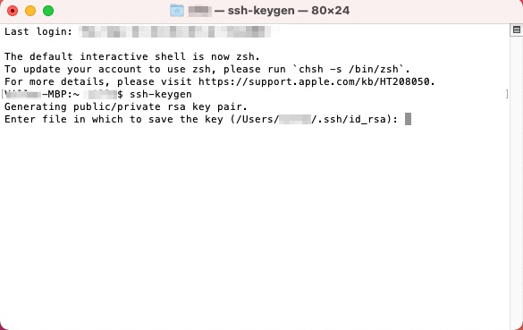
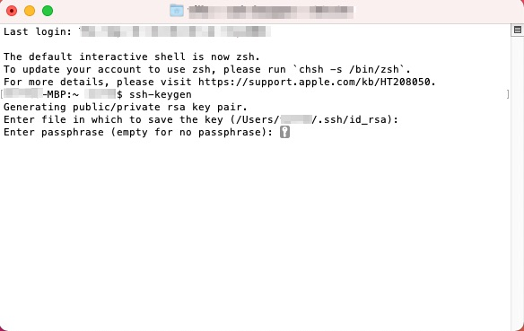
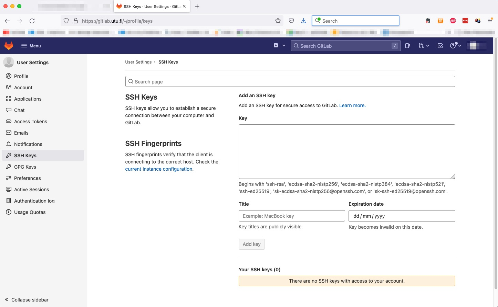

A Versionhallinta
Joonatan Palmu
Versionhallinta on monikäsitteinen termi, joka kuvaa R-koodin tallentamista työn edetessä erityiseen varastoon (repository), joka tarjoaa mm. seuraavia etuja:
- yhtä useampi henkilö voi osallistua projektiin
- työ ei vahingossa tuhoudu
- virheet on helpompi löytää kun vertaa toimivaa ja rikkinäistä versiota rinnakkain
- versionhallinta on yksi mahdollisista keinoista tieteen replikaatiokriisin ratkomisessa
Yleisin ja luultavasti paras versionhallintaohjelmisto on tällä hetkellä Git, jolle myös Turun yliopisto tarjoaa varastotilaa. Turun yliopistossa kirjoilla olevat voivat kirjautua yliopiston palvelimeen osoitteessa gitlab.utu.fi. Yhtä hyviä vaihtoehtoja ovat GitHub ja GitLab, jotka eivät vaadi kirjoillaoloa missään oppilaitoksessa.
A.1 Versionhallinta - ei vain guruille
Versionhallinta voi äkkiseltään näyttäytyä monimutkaisena käsitteenä, jonka aloittelija mielellään jättäisi vain edistyneille koodaajille. Olemme nostaneet aiheen esiin kuitenkin jo tässä R-pikaoppaassa, sillä versionhallinnan käyttöön kannattaa totutella niin aikaisin kuin mahdollista, jo yllä kuvatuista syistä. Tässä oppaassa esitellään alla metodi, jolla saat vaivatta versionhallinnan arvokkaana työkaluna projektiisi heti alusta alkaen.
A.2 Avoimista lisensseistä
Jos ei ole erityistä syytä toimia toisin, on omaan R-koodiin aina hyvä heti alussa liittää mukaan avoin lisenssi - ts. käyttölupa, joka oikeuttaa muiden käyttää työtä haluamallaan tavalla (tekijän lisenssissä osoittamin oikeuksin). Avoimista lisensseistä saa tietoa osoitteesta ChooseALicense.com. Kyseinen sivusto ohjaa sopivan lisenssin valinnassa, on sitten kyse tietokoneella luodusta ohjelmakoodista, videoista tai sekalaisia työn muotoja sisältävistä projekteista.
Mainittakoon, että tälle R-oppaalle on luotu lisenssi Creative Commonsin palvelussa, jossa sopivan lisenssin saa muutamalla klikkauksella valittua avautuvista valikoista. Creative Commonsin lisenssit soveltuvat erityisen hyvin esim. kirjojen, valokuvien ja musiikin lisensoitiin.
Internetistä löytyy valtavasti esimerkkikoodia, jonka hyödyntämistä vaikeuttaa valitettavan paljon lisenssitiedon puuttuminen. Tyypillisesti tekijänoikeuden omistajaa ei enää ole mahdollista jälkikäteen tavoittaa luvan kysymiseksi, eli pyörä joudutaan keksimään uudelleen. Tämä epäkohta olisi helposti torjuttavissa, kun jokaiseen projektiin liitettäisiin alusta asti selkeä lisenssi.
Omien analyysien uskottavuutta ja toistettavuutta lisää merkittävästi artikkelin rinnalla julkaistu avoimesti lisensoitu analyysikoodi. Omasta ohjelmakoodista voi tehdä helposti viitattavaa CERN:n Zenodo-palvelua käyttäen, jolloin esimerkiksi koodit sisältävälle zip-tiedostolle (ladattavissa suoraan yliopiston Git-palvelimelta) saa pysyvän arkistointipaikan ja DOI-tunnuksen.
Alla näkyvään taulukkoon on listattu muutamia keskeisimpiä peruslisenssejä. Voit lukea lisää erilaisista avoimista lisensseistä halutessasi Wikipediasta.
| Avoimen lisenssin nimi | Lisenssin kuvaus | Huomioitavaa |
|---|---|---|
| MIT | Äärimmilleen typistetty yksinkertainen ja salliva peruslisenssi | Soveltuu hyvin ohjelmointikoodin lisensointiin |
| CC-BY 4.0 | Yksi Creative Commonsin lisensseistä: työ vapaasti muunneltavissa ja jaettavissa, mutta johdannaisen lähde on mainittava | Ei sovellu hyvin ohjelmointikoodin lisensointiin |
| LGPLv3 | Työ on vapaasti muunneltavissa, mutta myös julkaistun johdannaisen pitää olla avoin | Soveltuu erinomaisesti ohjelmointikoodin lisensointiin |
Saat haettua projektillesi lisenssin myös suoraan Gitlabissä sen valmiilla malleilla (template) alla olevassa kuvassa esitettävällä tavalla.

A.3 Varaston (repository) luominen yliopiston palvelimelle
- Mene verkkoselaimellasi osoitteeseen gitlab.utu.fi
- Valitse oikealta ylhäältä
New project-nappi - Luo uusi projekti painikkeesta
Create blank project. Projektille kannattaa valita kuvaava nimi - Tässä vaiheessa näkyvyyden voi valita salatuksi (private), jos koodi julkistetaan vasta artikkelin julkaisun yhteydessä
- Projektin luomisen jälkeen käyttäjälle aukeaa alhaalla olevan kuvan
kaltainen näkymä, josta
Clone-napin alta löytyy projektin SSH-osoite jaAdd LICENSE-napin takaa voi projektille lisätä lisenssin valmiita malleja (template) käyttäen.

A.4 SSH-avaimen luominen
RStudion ja Git-palvelimen välinen tiedonsiirto edellyttää ssh-avaimen luomista
Linuxissa ja Mac:ssä tämä tapahtuu helposti antamalla terminaalissa komento
ssh-keygenTämän jälkeen julkinen avain (
~/.ssh/id_rsa.pub) pitää kopioida yliopiston palvelimelle osoitteessa https://gitlab.utu.fi/-/profile/keysAvaimen luominen on mahdollista myös Windowsissa
- Jos windowsin shell ei tunnista
ssh- taissh-keygen-komentoja, täytyyOptional Features-valikosta asentaaOpenSSH Client
- Jos windowsin shell ei tunnista
Tarkemmat ohjeet Macille kuvineen alla:
Avaa Macissä Terminal (avautuu mm. seuraavasti: paina
Omppu+välilyöntinäppäin ja kirjoita terminal ja paina enteriä) ja
kirjoita Terminaliin ssh-keygen ja paina enteriä:

MacOS ehdottaa kohdetta, johon SSH-avain tallennetaan - voit hyväksyä ehdotuksen:

MacOS kysyy salasanaa SSH-avaimelle; kun se nyt tulee käyttöön RStudion ja gitlab.utu.fi:n välille, itse jättäisimme salasanan tässä asettamatta painamalla pariin otteeseen pelkkää enteriä:

Tämän jälkeen MacOS näyttää, mihin SSH-avain on tallennettu:

Nyt voit kirjoittaa cat /Users/sinunkäyttäjänimesi/.ssh/id_rsa.pub, jolloin koko SSH-avain tulostuu näytölle, ja voit kopioida SSH-avaimen leikepöydälle (maalaa jo sanoista ssh-rsa ja lopussa aina Mac-koneesi tyyppiä myöden, tässä tapauksessa -MBP):

Voit nyt logata gitlab.utu.fi:hin ja klikata oikealle ylös omaan avatariisi, jonka alta valitaan Preferences, ja edelleen vasemmasta laidasta SSH Keys:

Tämän jälkeen SSH-avaimesi pastetetaan kohtaan Key leikepöydältä, jonne äsken SSH-avaimesi tallensit, ja klikataan Add key:

A.5 Varaston käyttö RStudiossa
- Valitse valikosta
File,New Project,Version ControljaGit(alla kuva). Lisää tähän projektin internet-sivuiltaClone-napin alta kopioitu SSH-osoite

Kun projekti on tuotu paikalliselle koneelle, voi siihen lisätä analyyseissä tarvittavia tiedostoja valitsemalla
File NewjaR markdownUuden tiedoston lisäämisessä on kaksi vaihetta:
- tiedoston siirtäminen versionhallintaan eli kommitointi (commit), ja
- tehtyjen muutosten siirtäminen omalta koneelta palvelimelle eli pushaus
Aina kun on tehty merkittävä muutos, lisätään se versiohallintaan käyttäen alla olevassa kuvassa näkyviä nappeja
GIT,Staged,CommitjaPush
- Tiedoston siirtymisen yliopiston palvelimelle voi tarkistaa katsomalla projektin internetsivua selaimella
- Kun tiedosto on kerran lisätty versiohallintaan, voi jatkossa sitä
koskevat muutokset päivittää
Git-napin takaaCommit-nappia painamalla. Kommitoidessa on hyvä tapa liittää kuvailu tehdyistä muutoksista. Tehdyt commitit pitää vielä siirtää yliopiston palvelimellePush-napista. - Muutokset kannattaa kommitoida aina kun saa koodissa jonkin kokonaisuuden valmiiksi tai esimerkiksi virheen korjattua. Vaihtoehtoisesti tämän voi tehdä aina päivän päätteeksi.
A.6 Yhteenveto
Kolme yksinkertaista keinoa parantaa merkittävästi omia analyysejä, niiden toistettavuutta ja yhteistyömahdollisuuksia:
Käytä versionhallintaa (pieni investointi maksaa vaivan monin kerroin)
Lisää koodiin avoin lisenssi (myös oma näkyvyys lisääntyy, jos muut jakavat työtäsi)
Käytä R-kirjastojen hallinnoimiseen packrat- tai renv-pakettihallintaa (analyysit on mahdollista toistaa vielä yli 6–12 kk:n kuluttua)
- Näiden käyttöä ei käsitellä tässä R-oppaassa, mutta renv esitellään hyvin havainnollistavasti tässä YouTube-videossa (jos olet kiireinen, kelaa suoraan videon kohtaan 10:20)
R-opas
by
Ville
Langén is licensed under
Attribution-ShareAlike
4.0
International